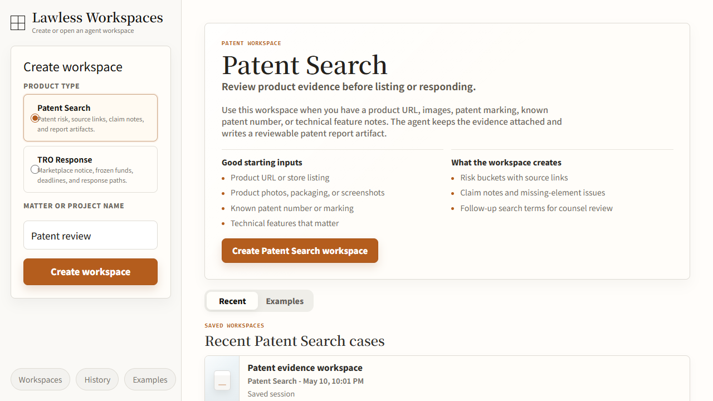

05 / TRO
TRO Response Skill: 冻结案件的交互式 case response
TRO Response 的核心，是把冻结通知、资金暴露、证据缺口和路径选择整理成律师可以接手的案件状态。

卖家收到 TRO 或冻结通知后，不知道案件来源、冻结金额、要补什么材料、该和解还是抗辩。
case brief、money exposure、evidence checklist、path cards、draft email 和 reviewer decision 组成响应 harness。
目前证明 shared workspace 与 case artifact；TRO-specific eval 仍需补强，距离成熟自动法律服务还有明确边界。

1. 为什么做：卖家第一痛点是不知道自己处在哪一步
TRO 或冻结通知带来的压力很具体：账户或资金被冻结，对方律所要求回应，平台材料不完整，卖家不清楚自己面对的是商标、版权、专利还是其他 IP 风险。很多人也不知道要补什么证据、是否谈 settlement、是否找律师抗辩、是否还有时间窗口。
系统先建立案件位置，再生成对外沟通草稿：通知来源、法院/律所事实、冻结金额、平台状态、商品事实、证据清单、路径选择和草稿沟通。邮件是后期动作，依赖前面的事实整理。
2. 怎么做：把恐慌式问答改成案件状态机
TRO workspace 的状态机可以写成 intake -> evidence gathering -> path selection -> draft review -> follow-up。intake 更新 case source、platform、law firm、court document 和 seller facts；evidence gathering 更新 missing evidence、sales/funds exposure、listing/product facts 和 screenshots；path selection 更新 evidence-first、settlement、defense/lawyer 或 risk/abandonment 等 path cards。
输出被拆成可复核块：case brief 说明案件来源和事实，money exposure 说明冻结或销售暴露，evidence checklist 说明缺什么，path cards 说明可走路径和风险，draft email 只在事实足够时生成。reviewer decision 会写回下一轮，让后续补证和客户更新能接着上一轮继续。
TRO 的 human in the loop 直接对应高风险判断。冻结资金、和解建议、抗辩路径和对外邮件都需要复核；assistant 准备材料和草稿，律师或运营批准后才进入对外动作。
3. 结果是什么：案件从混乱材料进入可接手工作包
当前 TRO 的结果主要是 shared workspace 和 case artifact 方向成立：route/config、questionnaire、skill binding、artifact path 和 workspace interaction 都能支撑从 intake 到 artifact 的流程。卖家的材料被组织成律师或运营能接手的结构。
这套结果仍处在产品化阶段。相比 patent search，TRO-specific eval 还需要补：材料缺口识别准确率、路径建议一致性、draft email 是否引用真实案件事实、用户能否完成到 review 阶段。
4. 边界：draft email 必须晚出现
TRO 里最重要的产品判断之一，是 draft email 应该晚出现。只有当 case source、money exposure、evidence gaps 和 preferred path 清楚之后，草稿才有意义。否则系统只是更快地产生一个可能错误的对外口径。
参考材料
- lawless-web-app/docs/case-workspace-inputs.md
- lawless-web-app/docs/tro-agent-workspace-interaction-options.md
- lawless-web-app/src/products/shared/case-workspace/caseWorkspaceConfig.ts
- lawless-web-app/src/app/api/chat/route.ts
- lawless-web-app/.agents/skills/ecommerce-tro-settlement/questionnaire.json